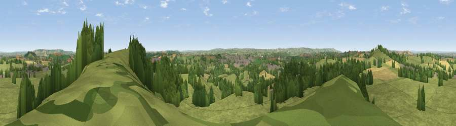

Viewpoint near High Littleton
#11675 in England · top 19% of its area beats it · near High LittletonThe view, rendered

A 360° render of this exact spot computed from the terrain model, tree cover and land cover — summer colours, afternoon light, calibrated against photographs of famous viewpoints. Real trees, hedges and buildings will differ in detail.
The panorama
Grey silhouette: terrain skyline in each direction (720 bearings, Earth curvature and refraction included). Dashed green: skyline with trees (+15 m) and buildings (+8 m) as obstacles. Blue strip: how far the ground is visible on each bearing.
Where the view opens
Wedge length = distance to the farthest visible ground on that bearing (vegetation-aware). Rings at 10, 25 and 50 km.
What fills the view
71% grassland · 18% woodland · 8% cropland · 3% built-up
Angular shares of the visible panorama (visual magnitude), not map area. Landscape diversity 0.37 (0–1 Shannon).
Key numbers
More beautiful places nearby
The staircase of upgrades: each row has a higher view potential than everything closer. Driving times are estimates from straight-line distance, calibrated against real road routing — check an actual route before setting out.
| Place | Direction | Drive | Score |
|---|---|---|---|
| The Sleight | E · 0 km | ~1 min | 68.8 |
| Viewpoint near Chelwood | WNW · 2 km | ~5 min | 70.6 |
| Viewpoint near Stanton Prior | NNE · 5 km | ~10 min | 70.7 |
| Viewpoint near Norton Malreward | NW · 9 km | ~18 min | 72.9 |
| Viewpoint near Kelston | NE · 9 km | ~19 min | 74.2 |
| Viewpoint near North Stoke | NNE · 11 km | ~21 min | 75.4 |
| Hanging Hill | NNE · 12 km | ~23 min | 76.4 |
| Beacon Batch | W · 17 km | ~30 min | 79.4 |
51.33241, -2.49766 · source: screening · position refined by local search. Computed location — check access rights before visiting.